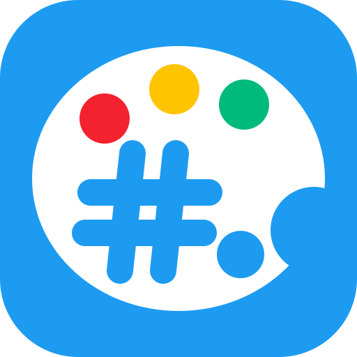

意見は Twitter で気軽に投げつけてください。
パレットや設定などのアプリのデータは、この端末（ブラウザ）の中にだけ保存されます。サーバーに送られることはありません。
ツイートを引用するときは、本文を取得するためにツイートのURLを送信します。
このサイトでは、利用状況を把握するためにGoogleタグマネージャー（Googleアナリティクス）を使用しています。Cookieを使って匿名のデータを収集しますが、個人を特定する情報は含みません。
Googleによるデータの使用について